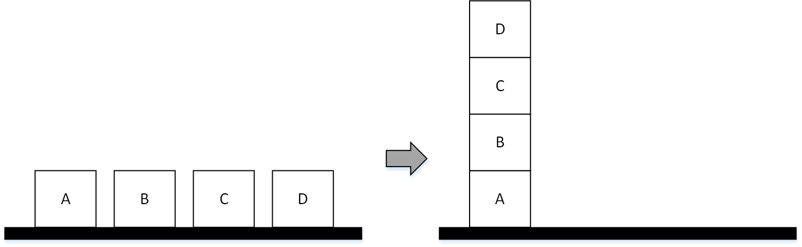

Python SPD example¶
Getting started¶
The framework is released as EGG file to be used on a Desktop platform, therefore it can be easily installed in a Python installation.
The framework needs ANTLR4 library for its operation.
Using EmbASP¶
In the following, we describe an the actual usage of the framework by means of a running example; as a use case, we will develop a simple Desktop application to solve the blocks-world problem.
{kind=link}
We will make use of the annotation-guided mapping, in order to retrieve the actions constituting a PDDL plan via Python objects.
To this purpose, the following classes are intended to represent possible actions that a blocks-world solution plan can feature:
class PickUp(Predicate):
predicateName="pick-up"
def __init__(self, block=None):
super(PickUp, self).__init__([("block")])
self.block = block
[...]
class PutDown (Predicate):
predicateName="put-down"
def __init__(self, block=None):
super(PutDown, self).__init__([("block")])
self.block = block
[...]
class Stack (Predicate):
predicateName="stack"
def __init__(self, block1=None, block2=None):
super(Stack, self).__init__([("block1"), ("block2")])
self.block1 = block1
self.block2 = block2
[...]
class Unstack (Predicate):
predicateName="unstack"
def __init__(self, block1=None, block2=None):
super(Unstack, self).__init__([("block1"), ("block2")])
self.block1 = block1
self.block2 = block2
[...]
At this point, supposing that we are given two files defining the blocks-world domain and a problem instance, we can start deploying our application:
class Blocksworld():
__domainFileName = "domain.pddl"
__problemFileName = "p01.pddl"
def main(self):
handler = DesktopHandler(SPDDesktopService())
inputProgramDomain = PDDLInputProgram(PDDLProgramType.DOMAIN)
inputProgramDomain.addFilesPath(self.__domainFileName)
inputProgramProblem = PDDLInputProgram(PDDLProgramType.PROBLEM)
inputProgramProblem.addFilesPath(self.__problemFileName)
handler.addProgram(inputProgramDomain)
handler.addProgram(inputProgramProblem)
try:
PDDLMapper.getInstance().registerClass(PickUp)
PDDLMapper.getInstance().registerClass(PutDown)
PDDLMapper.getInstance().registerClass(Stack)
PDDLMapper.getInstance().registerClass(Unstack)
plan = handler.startSync()
for obj in plan.getActionsObjects():
#Manage objects as needed
except:
#Handle Exception
if __name__ == '__main__':
Blocksworld.main()
The class contains an Handler instance as field, that is initialized with a DesktopHandler using the required parameter SPDDesktopService.
Then it’s set-up the input to the solver; since PDDL requires separate definitions for domain and problem, two PDDLInputProgram are created and then given to the handler.
The next lines inform the PDDLMapper about what classes are intended to map the output actions.
Finally the solver is invoked, and the output is retrieved.
The output actions can be managed accordingly to the user’s desiderata.
For further information, contact embasp@mat.unical.it or visit our Website